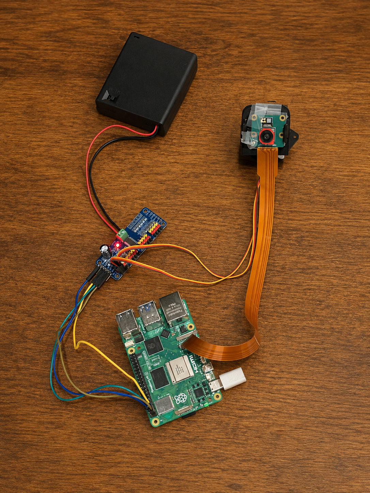
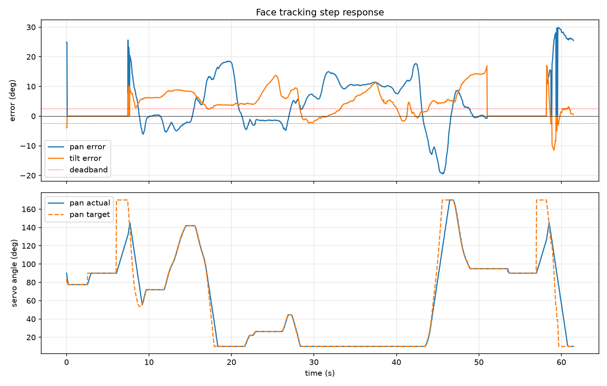

ROBOTICS / COMPUTER VISION
Designed and built a Raspberry Pi-based computer vision system that detects and tracks a face in real time by automatically controlling a two-axis pan-tilt camera mechanism.
During the demonstration, the camera detects the position of my face and automatically commands the pan and tilt servos to keep the target centered as I move through the camera's field of view.

The system combines a Raspberry Pi 5, Camera Module 3, PCA9685 PWM controller, two-axis pan-tilt servo mechanism, and a separate power supply for the servo system.
Frames from the Raspberry Pi Camera are processed using OpenCV to locate the target relative to the center of the image. The software calculates horizontal and vertical tracking error and converts that error into servo adjustments. Commands are sent over I²C to the PCA9685 controller, which drives the pan and tilt servos and repositions the camera.
Tracking data was recorded during a test run while I moved through different horizontal and vertical positions. The recorded data was then analyzed to visualize how the system adjusted the pan and tilt axes throughout the run.

Diagnosed an initial camera detection failure through hardware checks, cable verification, Raspberry Pi camera utilities, and configuration troubleshooting before identifying and replacing the faulty camera module.
Integrated the PCA9685 PWM controller over I²C to independently control the pan and tilt servos while using a separate power source for the servo system.
Tuned the relationship between target position error and servo movement to achieve responsive tracking while reducing excessive camera movement.
Hardware: Raspberry Pi 5, Camera Module 3, PCA9685 PWM Controller, Pan-Tilt Servo Assembly
Software: Python, OpenCV, Picamera2, Raspberry Pi OS
Engineering Concepts: Computer Vision, I²C Communication, PWM, Servo Control, Feedback Control, Data Logging, Experimental Testing